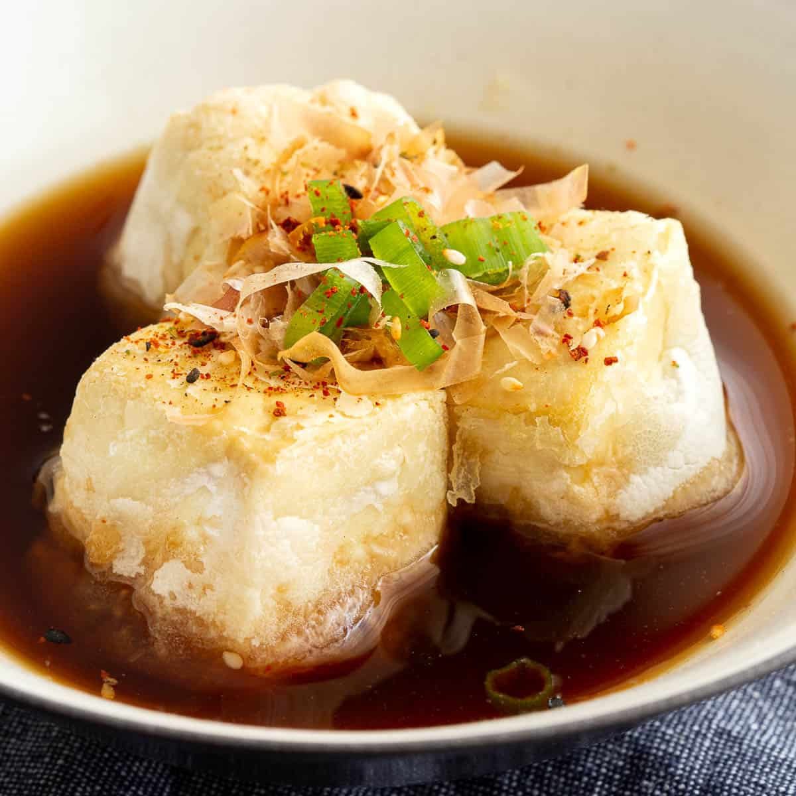

Agedashi Tofu Recipe
Home

Descripton
Agedashi dōfu (揚げ出し豆腐, "lightly deep-fried tofu")
is a Japanese hot tofu dish. Soft or medium-firm silken
tofu (kinugoshi) is cut into cubes, before being lightly
dusted with potato starch or cornstarch and then
deep fried until golden brown.
Ingredients
- 1 pack Silken Tofu
- 1 cup Cornstarch
- 1 cup Dashi Stock
- 4 tbsp of Soy Sauce
- 4 tbsp of Mirin
- 3 tbsp of grated Daikon
- 1 tbsp of Bonito Flakes
- 1 chopped Green Onion
Steps
- Prepare the sauce by bringing the dashi stock,
soy sauce, and mirin to a simmer in a pot.
Cook for 5 minutes and set aside.
- Drain the tofu and pat dry.
Cut the tofu into 1-inch pieces and
cover with corn starch.
- spray down the air fryer first with oil
and fry it at 380F for 15-17 minutes.
Flip halfway.
- In a serving bowl, add fried tofu,
drizzle sauce all over the tofu,
add in 1 tbsp of grated daikon,
and garnish with green onion and
bonito flakes.